Tipos de Amenazas y Preparación
Fenómenos imprevistos que exigen respuesta inmediata y capacitación continua de la brigada y comunidad SENA.
Sismos y Terremotos
Movimientos telúricos imprevistos. Protocolo: Protegerse bajo zonas seguras, no usar ascensores y evacuar con calma al Punto de Encuentro.
Incendios y Conflagraciones
Generados por fallas eléctricas o químicos inflamables en talleres. Requiere uso oportuno de extintores y activación de alarmas.
Inundaciones y Lluvias
Colapso de drenajes por lluvias torrenciales. Implica corte de energía, protección de equipos y despeje de vías de evacuación.
10 Recursos Clave del Plan de Emergencias
Equipos, dispositivos y señalizaciones indispensables identificados en los ambientes del centro de formación CTGI.
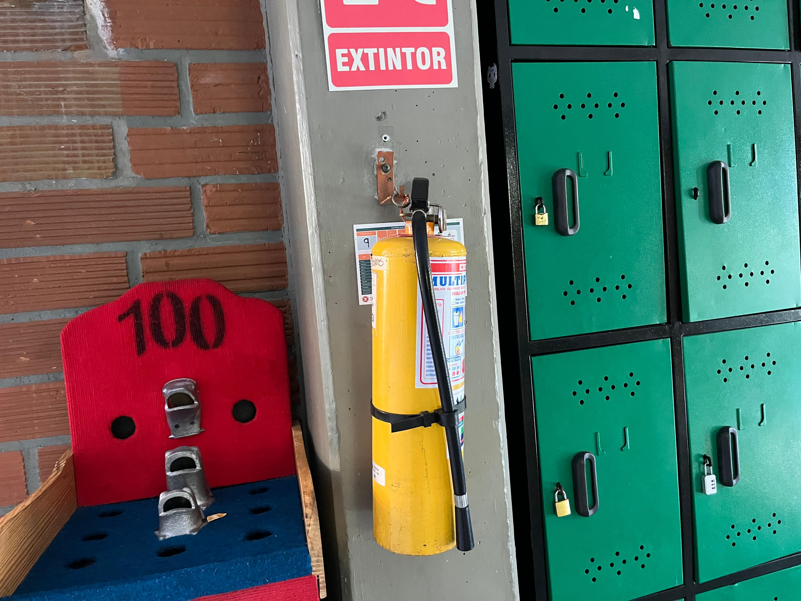
Recurso 1 · Extintor Ampliar1. Extintor Portátil Contra Incendios
Equipo presurizado de polvo químico seco (ABC) o CO2 para sofocar fuegos incipientes en talleres y laboratorios.
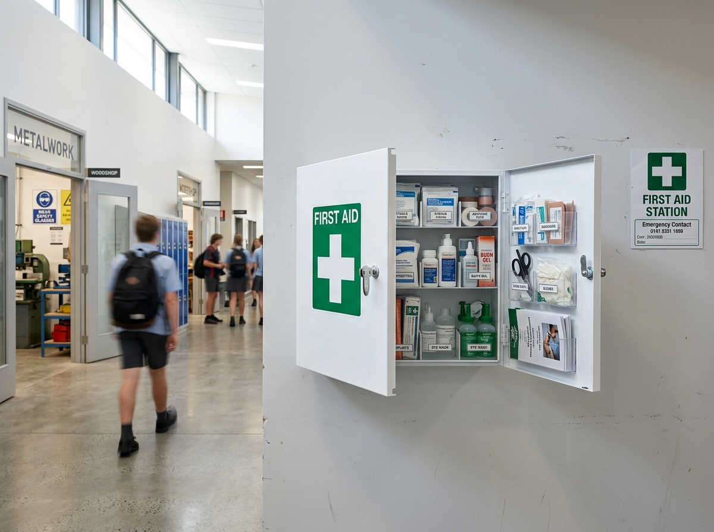
Recurso 2 · Botiquín Ampliar2. Botiquín de Primeros Auxilios
Gabinete equipado con insumos básicos: gasas, vendas, apósitos, microporo, solución salina y tijeras para atención inicial de heridos.
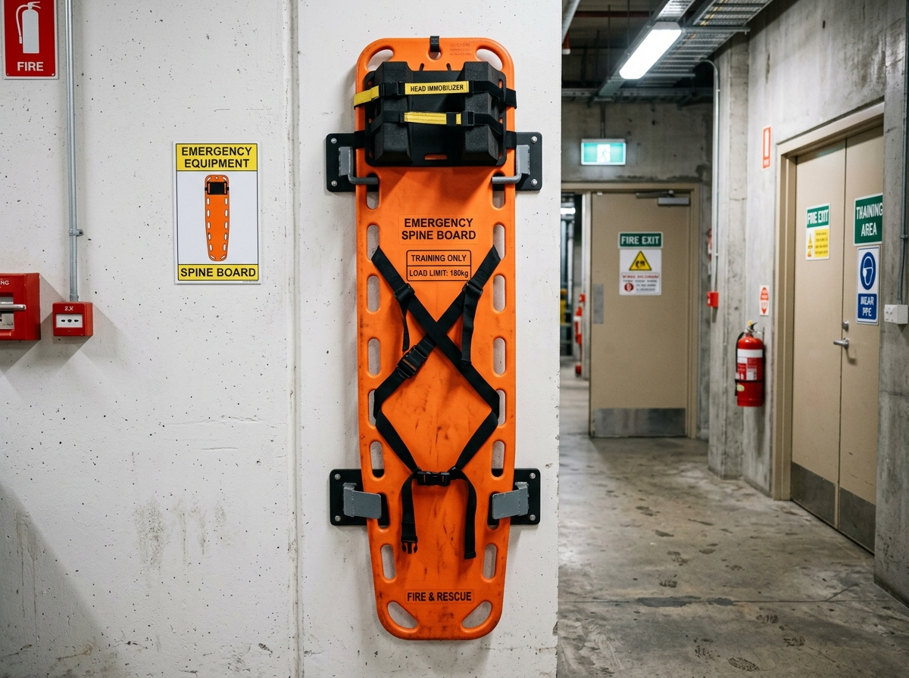
Recurso 3 · Camilla Ampliar3. Camilla Rígida de Emergencia
Camilla espinal con arnés de sujeción (tipo araña) e inmovilizador de cuello para el traslado seguro de personas traumatizadas.
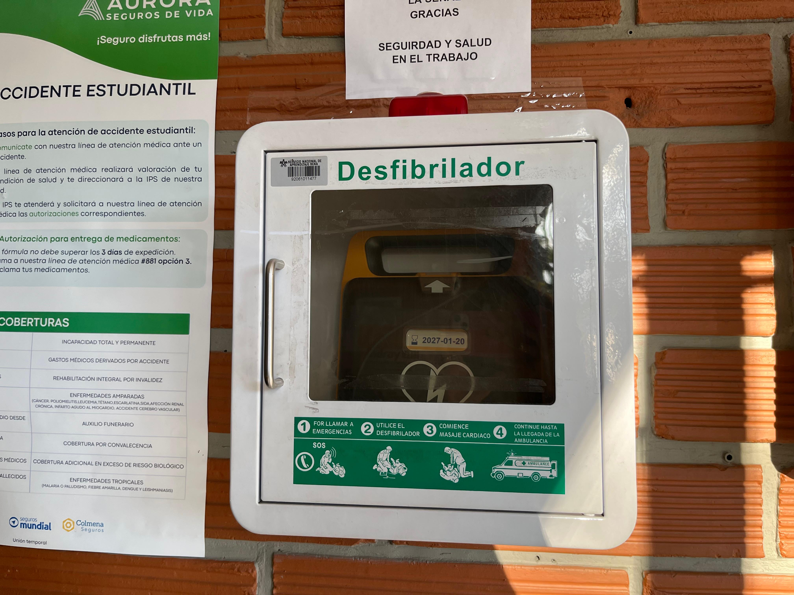
⚡ Recurso 4 · DEA Ampliar4. Desfibrilador Externo Automático (DEA)
Dispositivo médico de emergencia para reanimación cardiopulmonar y tratamiento inmediato de paros cardíacos súbitos (Ley 1831 de 2017).
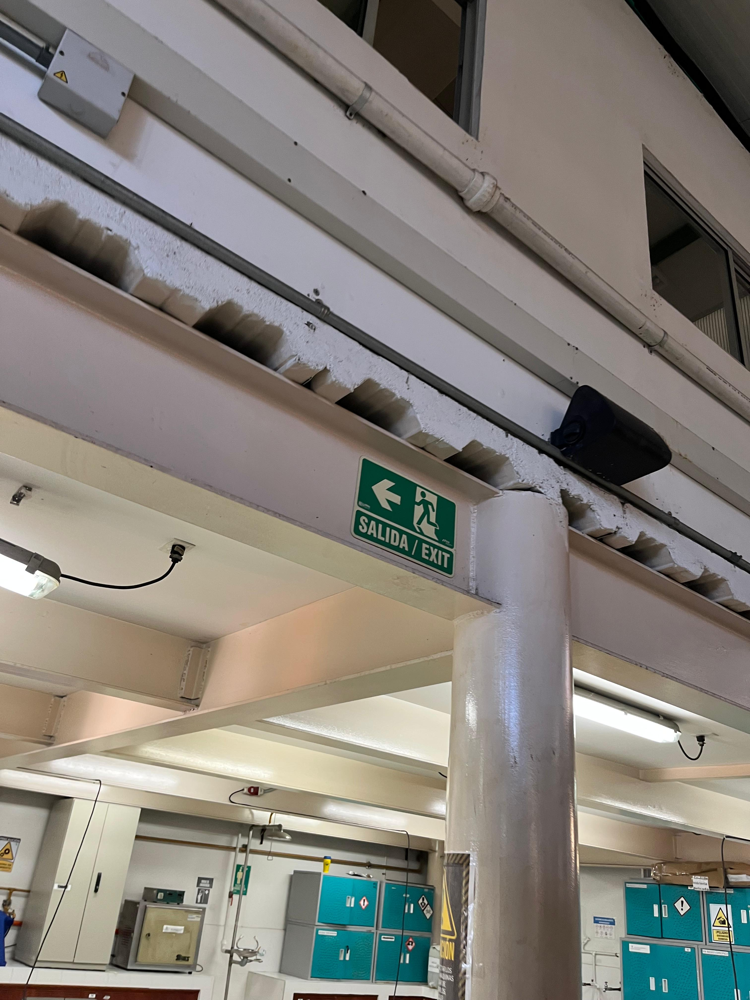
Recurso 5 · Señalización Ampliar5. Señalización de Rutas de Escape
Paneles fotoluminiscentes verdes que indican la trayectoria libre y segura hacia las salidas de emergencia ante corte de luz.
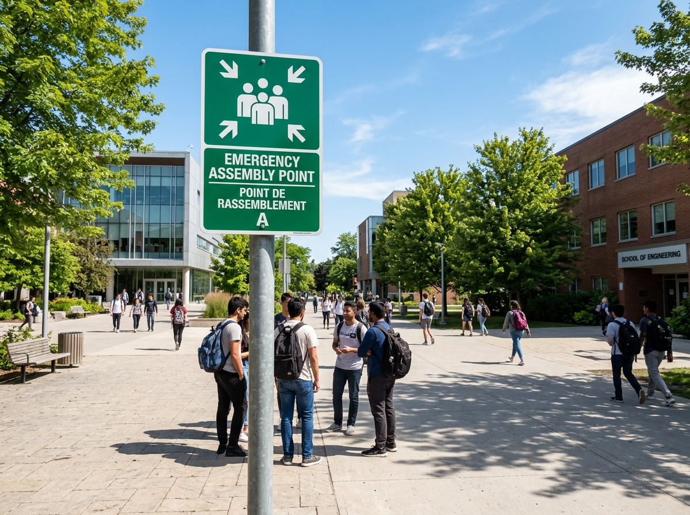
Recurso 6 · Punto Encuentro Ampliar6. Punto de Encuentro Institucional
Área despejada al aire libre (canchas / patios) donde la comunidad se congrega para el conteo de personal y verificación de aprendices.
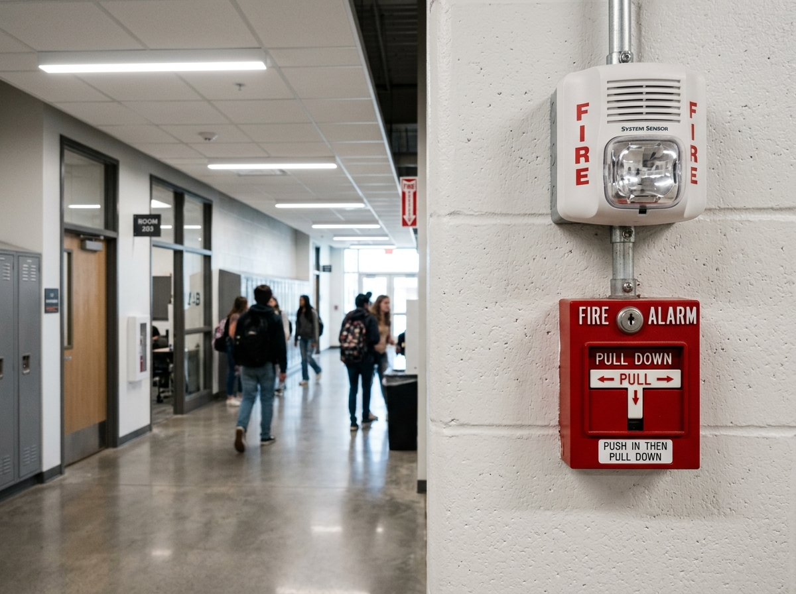
Recurso 7 · Alarma Ampliar7. Estación Manual de Alarma y Sirena
Pulsador de activación manual para alertar a todo el edificio e iniciar la evacuación inmediata ante humo o peligro inminente.
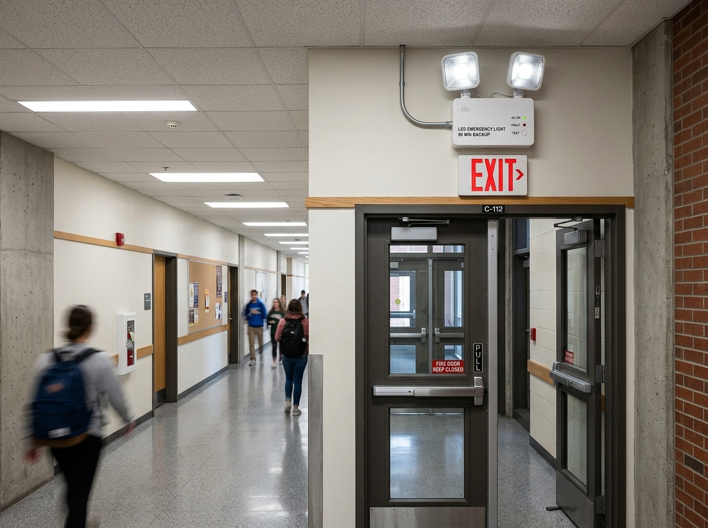
Recurso 8 · Luces Emergencia Ampliar8. Iluminación de Emergencia Autónoma
Lámparas LED con batería de respaldo que se encienden automáticamente cuando falla la red eléctrica general durante una contingencia.
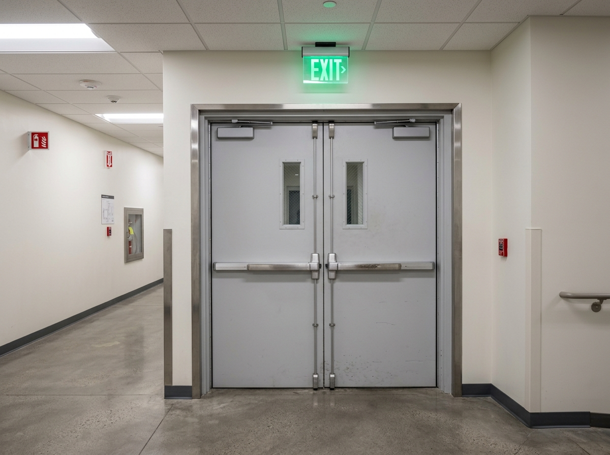
Recurso 9 · Salida Emergencia Ampliar9. Puertas de Escape con Barra Antipánico
Accesos de evacuación de apertura rápida hacia el exterior que deben mantenerse siempre 100% libres de cajas o mobiliario.
 Recurso 10 · Red Incendios
Ampliar
Recurso 10 · Red Incendios
Ampliar
10. Gabinete de Red Hidráulica y Manguera
Punto de conexión a la red de agua a presión con manguera semirrígida y hacha para uso exclusivo de la brigada de emergencias.
Manejo Integral de Residuos (Código de Canecas)
Separación en la fuente conforme al Código Unificado de Colores de Colombia (Resolución 2184 de 2019) aplicado en el CTGI.
🟢 Caneca Verde
Orgánicos Aprovechables
- Restos de comida cruda o preparada
- Cáscaras de frutas y verduras
- Hojas secas y residuos de poda
- Borra de café y bolsitas de té
⚫ Caneca Negra
No Aprovechables (Ordinarios)
- Papel higiénico y pañuelos faciales
- Servilletas usadas y toallas de mano
- Papeles y cartones engrasados con comida
- Papeles metalizados y colillas
⚪ Caneca Blanca
Aprovechables (Reciclables)
- Botellas plásticas y envases PET limpios
- Papel de archivo, periódico y cartón seco
- Latas de gaseosa y metales limpios
- Botellas y frascos de vidrio sin romper
🔴 Caneca Roja
Residuos Peligrosos / Biológicos
- Guantes de látex y nitrilo contaminados
- Gasas, apósitos y material con fluidos
- Envases de reactivos químicos y solventes
- Jeringas y agujas (en Guardián rígido)
6 Evidencias de Clasificación y Canecas
Puntos ecológicos y contenedores distribuidos en pasillos, cafetería, laboratorios y áreas comunes del CTGI.
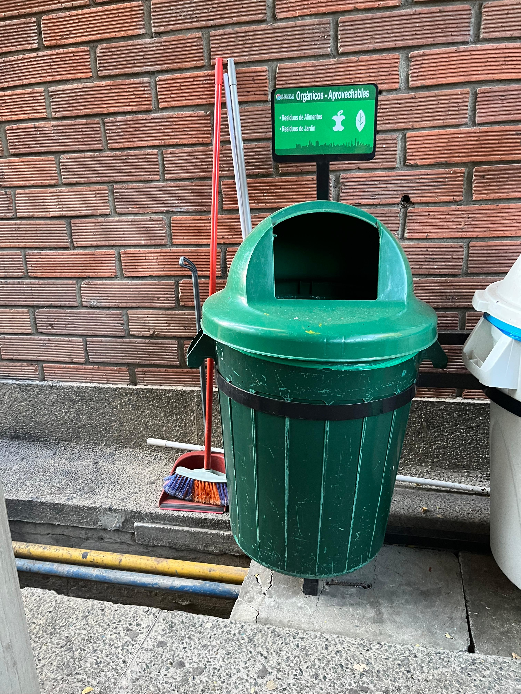
Caneca 1 · Verde (Orgánicos) Ampliar1. Caneca Verde: Residuos Orgánicos
Ubicada en zonas de alimentación y jardines para la recolección de restos de comida, frutas y vegetales que van a procesos de compostaje.
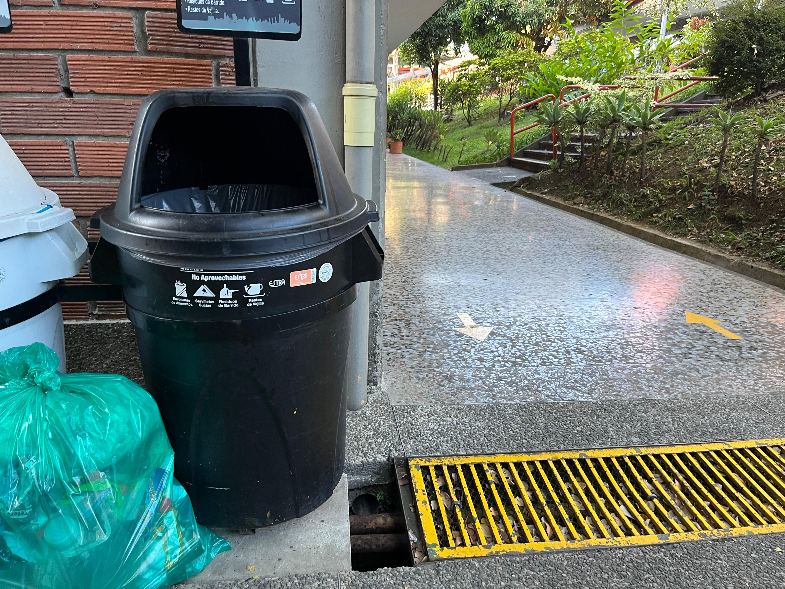
Caneca 2 · Negra (No Aprovechable) Ampliar2. Caneca Negra: Residuos Ordinarios
Destinada al depósito de residuos que van a relleno sanitario: papel higiénico, servilletas sucias, envolturas de snacks y toallas higiénicas.
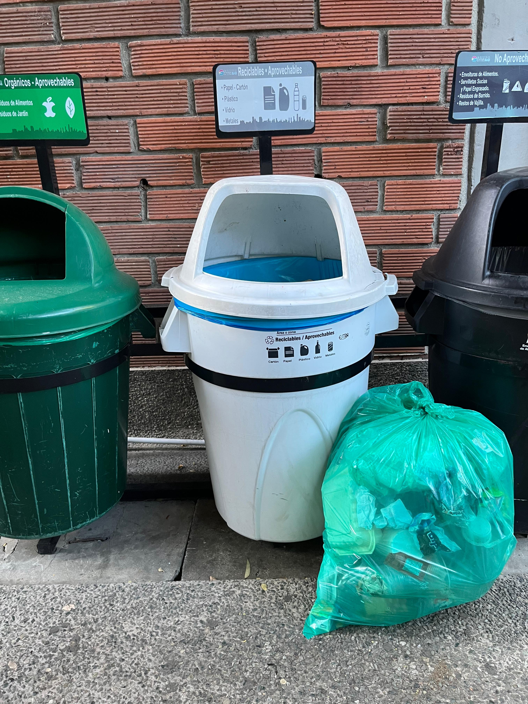
Caneca 3 · Blanca (Plásticos/PET) Ampliar3. Caneca Blanca: Plásticos y Botellas PET
Contenedor para botellas plásticas vacías, tapas y envases que pueden ser triturados y reincorporados a la cadena de valor.
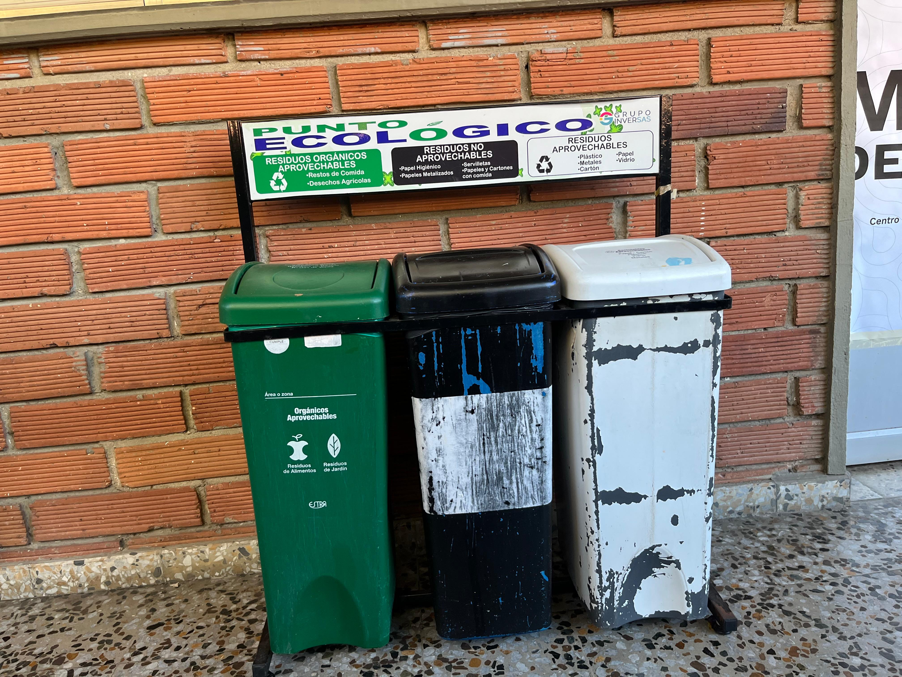
Caneca 4 · Blanca (Papel/Cartón) Ampliar4. Caneca Blanca: Papel y Cartón Limpio
Instalada en salas de sistemas y oficinas para recuperar papel de impresión, cajas de cartón desarmadas y hojas sin arrugar ni mojar.
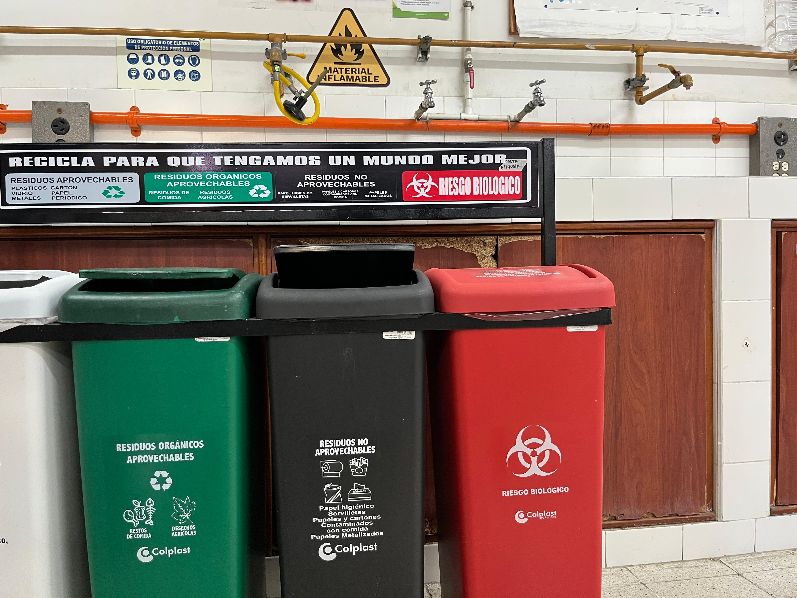
Caneca 5 · Roja (Peligrosos) Ampliar5. Caneca Roja: Residuos Peligrosos (RESPEL)
Ubicada en enfermería y laboratorios para material con riesgo biológico infeccioso (gasas, guantes, hisopos) con pedal para evitar contacto manual.
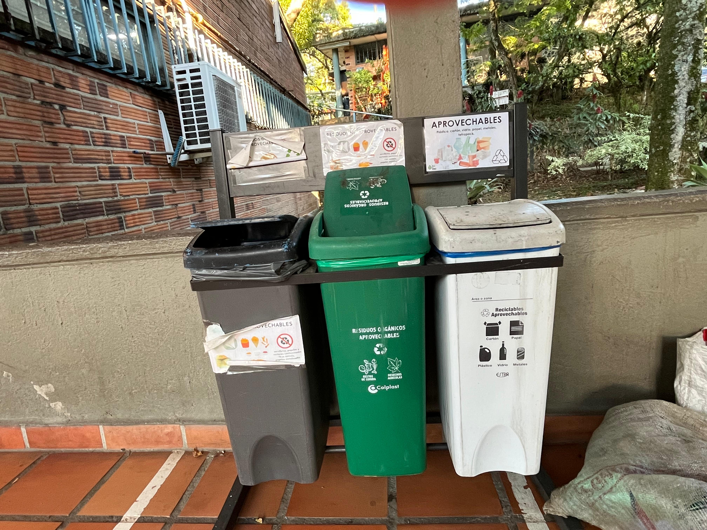
Punto Ecológico · Trío Nacional Ampliar6. Punto Ecológico Institucional Integrado
Estación modular unificada con las 3 canecas reglamentarias dispuestas en orden de izquierda a derecha con sus rótulos explicativos visibles.